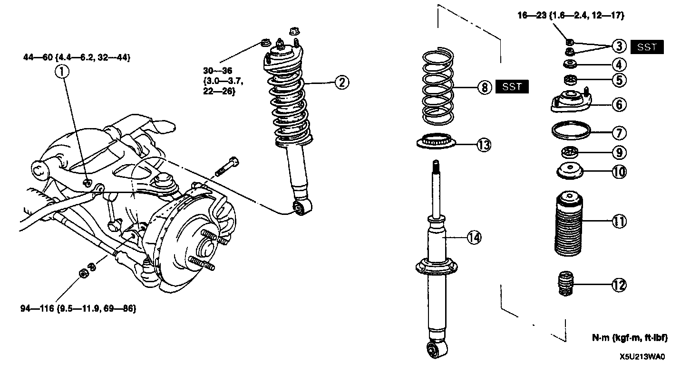
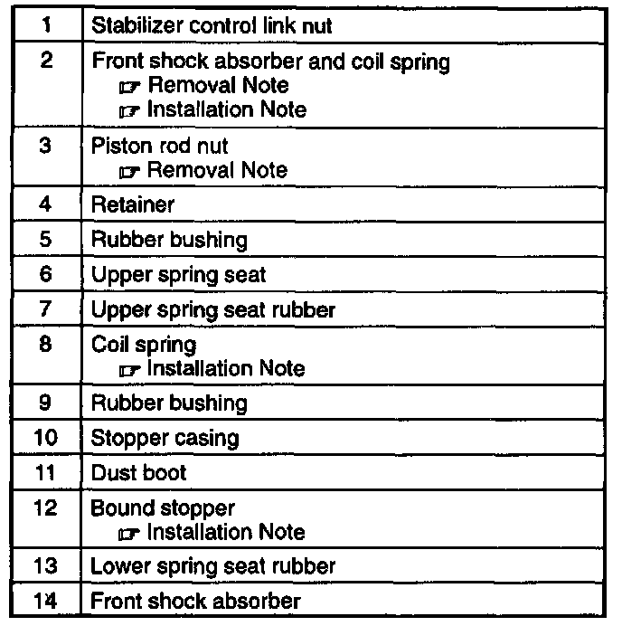
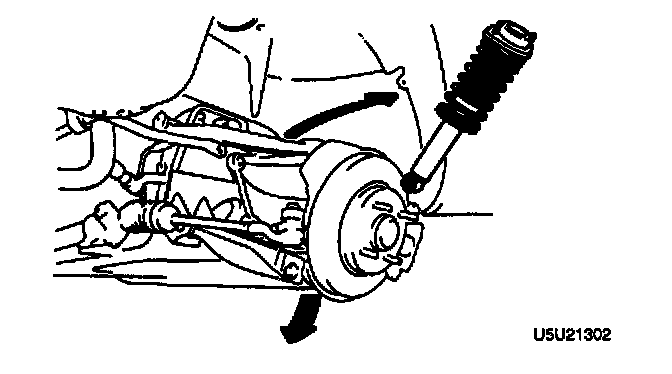
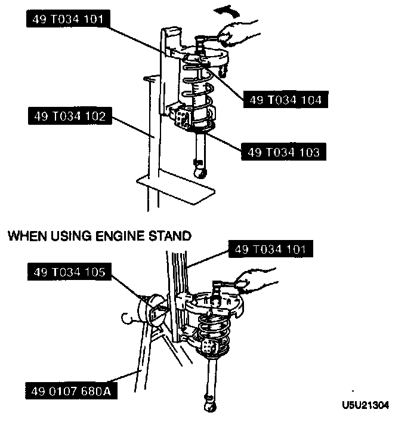
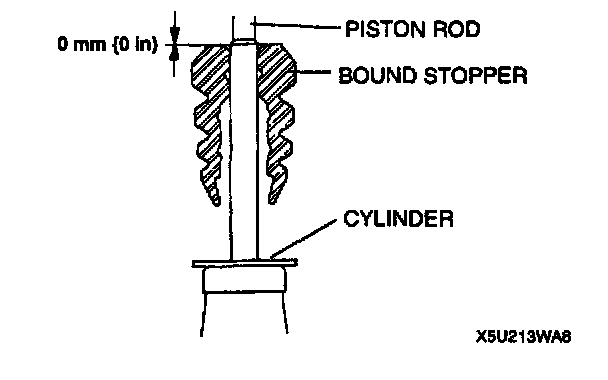
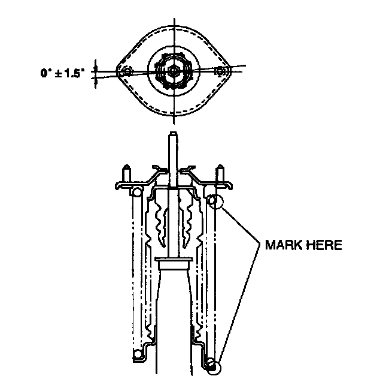
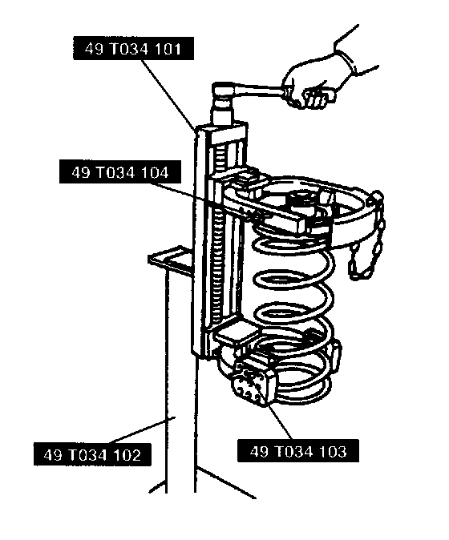
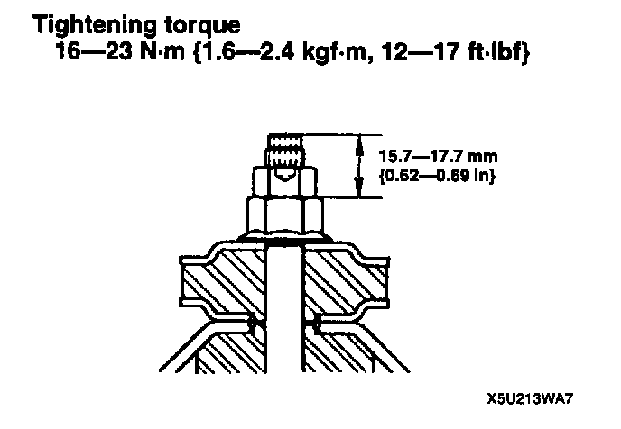
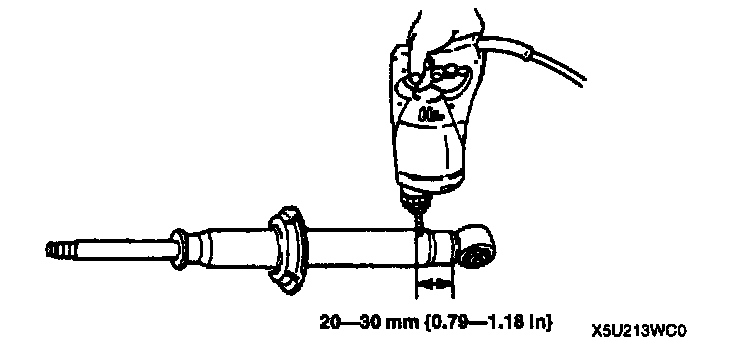

Front Shock Absorber and Coil Spring Removal/Installation
REMOVAL/INSTALLATIONCaution:
- Performing the following procedures without first removing the ABS wheel-speed sensor may possibly cause an open circuit in the harness if it is pulled by mistake. Before performing the following procedures, remove the ABS wheel-speed sensor (axle side) and fix it to an appropriate place where the sensor will not be pulled by mistake while servicing the vehicle.


1. Remove in the order indicated in the table.
2. Install in the reverse order of removal.
3. Adjust the front wheel alignment.
Front Shock Absorber And Coil Spring Removal Note
1. Disconnect the lower arm ball joint. (Refer to FRONT LOWER ARM REMOVAL/INSTALLATION, Lower Arm Ball Joint Removal Note.)
2. Loosen the lower arm bolts.
Caution:
- Do not lower the arms excessively, which may damage the brake hose.

3. Lower the lower arm to remove the shock absorber.
Piston Rod Nut Removal Note
Warning:
- Removing the piston rod nut is dangerous. The shock absorber and spring could fly off under tremendous pressure and cause serious injury or death. Secure the shock absorber in the SSTs before removing the coil spring nut.
1. Loosen the piston rod nut several turns, but do not remove the nut.
2. Assemble the SSTs.
3. Secure the shock absorber in the SSTs.

4. Compress the coil spring by using the SSTs and remove the nut.
Bound Stopper Installation Note
1. Install the bound stopper to the piston rod as shown.

2. Verify that the lower end of the bound stopper does not contact the cylinder.
Coil Spring Installation Note
1. Temporarily assemble the upper spring seat, upper spring seat rubber, and coil spring to the shock absorber as shown.

2. Mark the upper spring seat, shock absorber, and coil spring for proper reassembly.
3. Align the marks of the upper spring seat and coil spring. Protect the upper spring seat and the coil spring with a piece of cloth, then assemble the SSTs.

4. Use the SSTs to compress the spring.
5. Install the shock absorber, making sure that the marks on the shock absorber and coil spring are aligned.
6. Tighten the nut several turns.
7. Remove the SSTs.
8. Secure the shock absorber in a vise.
Caution:
- Using an air tool will damage the piston rod thread. Do not use an air tool.
9. Apply an antirust penetrating oil lubricant to the piston rod thread and tighten the lower piston rod nut so that the exposed thread of the piston rod is 15.7-17.7 mm (0.62-0.69 inch).

10. Tighten the upper nut to the specified torque.
Tightening torque 16-23 Nm (1.6-2.4 kg-m, 12-17 ft. lbs.)
Front Shock Absorber And Coil Spring Installation Note
- Install the front shock absorber and coil spring so that the ABS wheel-speed sensor bracket of the shock absorber faces the rear of the vehicle.
Front Shock Absorber Inspection
Inspect the following and replace as necessary.
1. Inspect for damage and oil leakage.
2. Inspect the rubber bushing for deterioration and wear.
3. Compress and extend the shock piston at least 3 times. Verify that the operational force does not change and that there is no unusual noise.
1) Compress the shock absorber piston and release it.
2) Verify that the piston extends fully at a normal speed.
Front Shock Absorber Disposal
Warning:
- The gas in the shock absorber is pressurized, and could spray metal chips into the eyes and face when drilling. Whenever drilling into a shock absorber, wear protective eye wear.
1. Clamp a shock absorber flat or with piston downwards.

2. Drill a 2-3 mm (0.08-0.12 inch) hole at a point 20-30 mm (0.79-1.18 inch) from the bottom of the tube so that the gas can escape.
3. Turn the hole downwards.
4. The oil can be collected by moving the piston rod several times up and down and cutting the tube at the end.
5. Dispose of the waste oil according to the waste disposal law.
Note:
- Shock absorber gas is nitrogen gas.
- Shock absorber oil is mineral oil.